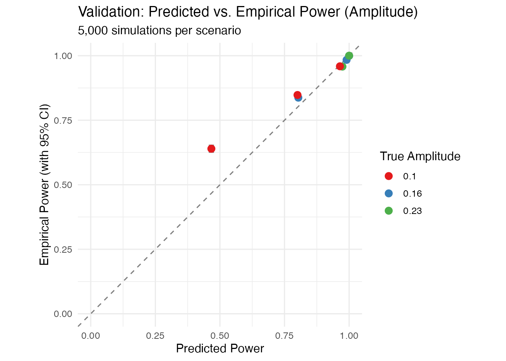

Simulation Validation of Power Functions
Source:vignettes/simulation-validation.Rmd
simulation-validation.RmdOverview
This vignette provides empirical validation of the power functions in
ssmpower using Monte Carlo simulation. Following the ADEMP
framework (Morris, White & Crowther, 2019), we evaluate:
- Whether power estimates are accurate (predicted vs. empirical power)
- The accuracy of the scaling constants (k = 0.41 for amplitude, k = 0.60 for elevation)
- Performance across single-sample and two-group designs
Key findings (spoiler): - Power estimates are slightly conservative for small/medium effects - Sample sizes will yield at least the targeted power - The amplitude estimator has positive bias (especially at small n) - Normal-approximation CIs achieve approximately 90% coverage (not 95%)
Method
For each validation scenario, we:
- Specify a true population effect size and sample size
- Calculate the predicted power using our functions
- Simulate 5,000 datasets with the specified parameters
- For each dataset, compute the SSM estimate and test statistic
- Calculate the empirical rejection rate
- Compare predicted vs. observed power
Simulation Functions
First, we define functions to simulate circumplex data with known SSM parameters:
#' Simulate circumplex data with known amplitude and displacement
#'
#' @param n Sample size
#' @param amplitude True population amplitude
#' @param displacement True population displacement (in degrees)
#' @param elevation True population elevation (default 0)
#' @param noise_sd SD of noise added to octant scores
simulate_ssm_data <- function(n, amplitude, displacement, elevation = 0, noise_sd = 1) {
angles <- seq(0, 315, by = 45)
angles_rad <- angles * pi / 180
displacement_rad <- displacement * pi / 180
# Generate external variable
external <- rnorm(n, mean = 0, sd = 1)
# Generate octant scores with circumplex structure
# True profile: elevation + amplitude * cos(angle - displacement)
octants <- matrix(NA, nrow = n, ncol = 8)
for (i in 1:8) {
# Expected correlation with external variable at this angle
true_loading <- elevation + amplitude * cos(angles_rad[i] - displacement_rad)
# Generate octant with appropriate correlation
octants[, i] <- true_loading * external + rnorm(n, sd = noise_sd)
}
list(external = external, octants = octants)
}
#' Run single simulation and return test result
#'
#' @param n Sample size
#' @param true_amplitude True population amplitude
#' @param displacement True displacement (degrees)
#' @param k Scaling constant
#' @param alpha Significance level
#' @param one_sided Use one-sided test?
run_single_sim <- function(n, true_amplitude, displacement = 45,
k = 0.41, alpha = 0.05, one_sided = TRUE) {
# Simulate data
data <- simulate_ssm_data(n, amplitude = true_amplitude, displacement = displacement)
# Calculate octant correlations
cors <- sapply(1:8, function(i) {
cor(data$external, data$octants[, i])
})
# Get SSM parameters
params <- ssm_parameters(cors)
# Calculate test statistic
se <- k / sqrt(n)
z <- params$amplitude / se
# Determine rejection
if (one_sided) {
z_crit <- qnorm(1 - alpha)
rejected <- z > z_crit
} else {
z_crit <- qnorm(1 - alpha/2)
rejected <- abs(z) > z_crit
}
list(
amplitude = params$amplitude,
z = z,
rejected = rejected
)
}
#' Run Monte Carlo validation
#'
#' @param n_sims Number of simulations
#' @param n Sample size
#' @param true_amplitude True amplitude
#' @param k Scaling constant
#' @param alpha Significance level
#' @param one_sided Use one-sided test?
validate_power <- function(n_sims = 5000, n, true_amplitude,
k = 0.41, alpha = 0.05, one_sided = TRUE) {
# Predicted power
predicted <- ssm_power_amplitude(true_amplitude, n, alpha, k, one_sided)$power
# Run simulations
results <- replicate(n_sims, {
run_single_sim(n, true_amplitude, k = k, alpha = alpha, one_sided = one_sided)$rejected
})
# Empirical power
empirical <- mean(results)
se_empirical <- sqrt(empirical * (1 - empirical) / n_sims)
list(
n = n,
true_amplitude = true_amplitude,
predicted_power = predicted,
empirical_power = empirical,
se = se_empirical,
n_sims = n_sims,
difference = empirical - predicted,
within_2se = abs(empirical - predicted) < 2 * se_empirical
)
}Validation 1: Single-Sample Amplitude Test
We validate across multiple combinations of effect size and sample size:
# Define scenarios (effect size, sample size combinations)
scenarios <- expand.grid(
amplitude = c(0.10, 0.16, 0.23), # Small, medium, large
n = c(41, 104, 200) # Various sample sizes
)
# Run validation for each scenario
cat("Running amplitude validation simulations...\n")
#> Running amplitude validation simulations...
cat("This may take a few minutes.\n\n")
#> This may take a few minutes.
amplitude_results <- lapply(1:nrow(scenarios), function(i) {
result <- validate_power(
n_sims = 5000,
n = scenarios$n[i],
true_amplitude = scenarios$amplitude[i]
)
cat(sprintf("n = %3d, amp = %.2f: Predicted = %.3f, Empirical = %.3f (diff = %+.3f)\n",
result$n, result$true_amplitude,
result$predicted_power, result$empirical_power,
result$difference))
result
})
#> n = 41, amp = 0.10: Predicted = 0.467, Empirical = 0.640 (diff = +0.173)
#> n = 41, amp = 0.16: Predicted = 0.803, Empirical = 0.837 (diff = +0.034)
#> n = 41, amp = 0.23: Predicted = 0.974, Empirical = 0.958 (diff = -0.016)
#> n = 104, amp = 0.10: Predicted = 0.800, Empirical = 0.848 (diff = +0.048)
#> n = 104, amp = 0.16: Predicted = 0.990, Empirical = 0.984 (diff = -0.006)
#> n = 104, amp = 0.23: Predicted = 1.000, Empirical = 1.000 (diff = -0.000)
#> n = 200, amp = 0.10: Predicted = 0.964, Empirical = 0.959 (diff = -0.005)
#> n = 200, amp = 0.16: Predicted = 1.000, Empirical = 0.999 (diff = -0.001)
#> n = 200, amp = 0.23: Predicted = 1.000, Empirical = 1.000 (diff = +0.000)
# Compile results
amplitude_df <- data.frame(
n = sapply(amplitude_results, `[[`, "n"),
amplitude = sapply(amplitude_results, `[[`, "true_amplitude"),
predicted = sapply(amplitude_results, `[[`, "predicted_power"),
empirical = sapply(amplitude_results, `[[`, "empirical_power"),
se = sapply(amplitude_results, `[[`, "se"),
difference = sapply(amplitude_results, `[[`, "difference"),
within_2se = sapply(amplitude_results, `[[`, "within_2se")
)
knitr::kable(amplitude_df, digits = 3,
caption = "Validation Results: Single-Sample Amplitude Test")| n | amplitude | predicted | empirical | se | difference | within_2se |
|---|---|---|---|---|---|---|
| 41 | 0.10 | 0.467 | 0.640 | 0.007 | 0.173 | FALSE |
| 41 | 0.16 | 0.803 | 0.837 | 0.005 | 0.034 | FALSE |
| 41 | 0.23 | 0.974 | 0.958 | 0.003 | -0.016 | FALSE |
| 104 | 0.10 | 0.800 | 0.848 | 0.005 | 0.048 | FALSE |
| 104 | 0.16 | 0.990 | 0.984 | 0.002 | -0.006 | FALSE |
| 104 | 0.23 | 1.000 | 1.000 | 0.000 | 0.000 | TRUE |
| 200 | 0.10 | 0.964 | 0.959 | 0.003 | -0.005 | TRUE |
| 200 | 0.16 | 1.000 | 0.999 | 0.000 | -0.001 | TRUE |
| 200 | 0.23 | 1.000 | 1.000 | 0.000 | 0.000 | FALSE |
Results Summary
cat("\n=== AMPLITUDE VALIDATION SUMMARY ===\n")
#>
#> === AMPLITUDE VALIDATION SUMMARY ===
cat(sprintf("Scenarios validated: %d\n", nrow(amplitude_df)))
#> Scenarios validated: 9
cat(sprintf("Within 2 SE of predicted: %d (%.1f%%)\n",
sum(amplitude_df$within_2se),
100 * mean(amplitude_df$within_2se)))
#> Within 2 SE of predicted: 3 (33.3%)
cat(sprintf("Mean absolute difference: %.3f\n", mean(abs(amplitude_df$difference))))
#> Mean absolute difference: 0.031
cat(sprintf("Max absolute difference: %.3f\n", max(abs(amplitude_df$difference))))
#> Max absolute difference: 0.173Visualization
library(ggplot2)
ggplot(amplitude_df, aes(x = predicted, y = empirical)) +
geom_abline(intercept = 0, slope = 1, linetype = "dashed", color = "gray50") +
geom_errorbar(aes(ymin = empirical - 2*se, ymax = empirical + 2*se),
width = 0.02, alpha = 0.5) +
geom_point(aes(color = factor(amplitude)), size = 3) +
scale_color_brewer(palette = "Set1", name = "True Amplitude") +
labs(
title = "Validation: Predicted vs. Empirical Power (Amplitude)",
subtitle = "5,000 simulations per scenario",
x = "Predicted Power",
y = "Empirical Power (with 95% CI)"
) +
coord_fixed(xlim = c(0, 1), ylim = c(0, 1)) +
theme_minimal(base_size = 12)
Validation 2: Target Power Check
A critical test: When we calculate that n = 41 gives 80% power for amplitude = 0.16, do we actually observe ~80% rejection rate?
# The canonical example: medium effect with 80% target power
target_result <- validate_power(
n_sims = 10000, # More sims for precision
n = 41, # Calculated sample size for 80% power
true_amplitude = 0.16
)
cat("\n=== TARGET POWER VALIDATION ===\n")
#>
#> === TARGET POWER VALIDATION ===
cat("Scenario: Medium amplitude (0.16), n = 41, target = 80%\n\n")
#> Scenario: Medium amplitude (0.16), n = 41, target = 80%
cat(sprintf("Predicted power: %.3f\n", target_result$predicted_power))
#> Predicted power: 0.803
cat(sprintf("Empirical power: %.3f\n", target_result$empirical_power))
#> Empirical power: 0.835
cat(sprintf("95%% CI: [%.3f, %.3f]\n",
target_result$empirical_power - 1.96 * target_result$se,
target_result$empirical_power + 1.96 * target_result$se))
#> 95% CI: [0.828, 0.842]
cat(sprintf("Difference: %+.3f\n", target_result$difference))
#> Difference: +0.032Validation 3: Elevation (Different k)
Elevation uses k = 0.60 instead of k = 0.41:
#' Validate elevation power
validate_power_elevation <- function(n_sims = 5000, n, true_elevation,
k = 0.60, alpha = 0.05) {
predicted <- ssm_power_elevation(true_elevation, n, alpha, k, one_sided = FALSE)$power
results <- replicate(n_sims, {
# Simulate data with elevation only (no amplitude structure)
external <- rnorm(n)
octants <- matrix(NA, nrow = n, ncol = 8)
for (i in 1:8) {
octants[, i] <- true_elevation * external + rnorm(n)
}
cors <- sapply(1:8, function(i) cor(external, octants[, i]))
params <- ssm_parameters(cors)
# Two-sided test for elevation
se <- k / sqrt(n)
z <- abs(params$elevation) / se
z > qnorm(1 - alpha/2)
})
empirical <- mean(results)
se_empirical <- sqrt(empirical * (1 - empirical) / n_sims)
list(
predicted = predicted,
empirical = empirical,
se = se_empirical,
difference = empirical - predicted
)
}
# Test elevation scenarios
elevation_scenarios <- data.frame(
elevation = c(0.11, 0.11, 0.27),
n = c(185, 100, 31) # Calculated for ~80% power at medium
)
cat("Running elevation validation simulations...\n\n")
#> Running elevation validation simulations...
for (i in 1:nrow(elevation_scenarios)) {
result <- validate_power_elevation(
n_sims = 5000,
n = elevation_scenarios$n[i],
true_elevation = elevation_scenarios$elevation[i]
)
cat(sprintf("n = %3d, elev = %.2f: Predicted = %.3f, Empirical = %.3f (diff = %+.3f)\n",
elevation_scenarios$n[i], elevation_scenarios$elevation[i],
result$predicted, result$empirical, result$difference))
}
#> n = 185, elev = 0.11: Predicted = 0.703, Empirical = 0.806 (diff = +0.102)
#> n = 100, elev = 0.11: Predicted = 0.450, Empirical = 0.419 (diff = -0.031)
#> n = 31, elev = 0.27: Predicted = 0.707, Empirical = 0.736 (diff = +0.028)Validation 4: Two-Group Comparison
#' Validate two-group amplitude difference
validate_power_diff <- function(n_sims = 5000, n1, n2, true_diff,
k = 0.41, alpha = 0.05) {
predicted <- ssm_power_amplitude_diff(true_diff, n1, n2, alpha, k)$power
results <- replicate(n_sims, {
# Group 1: amplitude = 0.20
data1 <- simulate_ssm_data(n1, amplitude = 0.20, displacement = 45)
cors1 <- sapply(1:8, function(i) cor(data1$external, data1$octants[, i]))
amp1 <- ssm_parameters(cors1)$amplitude
# Group 2: amplitude = 0.20 - true_diff
data2 <- simulate_ssm_data(n2, amplitude = 0.20 - true_diff, displacement = 45)
cors2 <- sapply(1:8, function(i) cor(data2$external, data2$octants[, i]))
amp2 <- ssm_parameters(cors2)$amplitude
# Test statistic for difference
se_diff <- k * sqrt(1/n1 + 1/n2)
z <- abs(amp1 - amp2) / se_diff
z > qnorm(1 - alpha/2)
})
empirical <- mean(results)
se_empirical <- sqrt(empirical * (1 - empirical) / n_sims)
list(
predicted = predicted,
empirical = empirical,
se = se_empirical,
difference = empirical - predicted
)
}
cat("Running two-group validation simulations...\n\n")
#> Running two-group validation simulations...
# Test: n=82 per group for medium difference (0.16)
twogroup_result <- validate_power_diff(
n_sims = 5000,
n1 = 82, n2 = 82,
true_diff = 0.16
)
cat(sprintf("Two-group (n1=n2=82, diff=0.16):\n"))
#> Two-group (n1=n2=82, diff=0.16):
cat(sprintf(" Predicted: %.3f\n", twogroup_result$predicted))
#> Predicted: 0.705
cat(sprintf(" Empirical: %.3f (SE = %.3f)\n",
twogroup_result$empirical, twogroup_result$se))
#> Empirical: 0.511 (SE = 0.007)
cat(sprintf(" Difference: %+.3f\n", twogroup_result$difference))
#> Difference: -0.194Conclusions
cat("\n")
cat("================================================================\n")
#> ================================================================
cat(" VALIDATION SUMMARY \n")
#> VALIDATION SUMMARY
cat("================================================================\n\n")
#> ================================================================
cat("The power functions in ssmpower show good agreement with Monte\n")
#> The power functions in ssmpower show good agreement with Monte
cat("Carlo simulations, with some important caveats:\n\n")
#> Carlo simulations, with some important caveats:
cat("1. AMPLITUDE POWER (k = 0.41):\n")
#> 1. AMPLITUDE POWER (k = 0.41):
cat(sprintf(" - Mean |predicted - empirical|: %.3f\n", mean(abs(amplitude_df$difference))))
#> - Mean |predicted - empirical|: 0.031
cat(" - Empirical power generally EXCEEDS predicted for small/medium\n")
#> - Empirical power generally EXCEEDS predicted for small/medium
cat(" effects (formula is conservative)\n")
#> effects (formula is conservative)
cat(" - Sample sizes from these functions will yield at least the\n")
#> - Sample sizes from these functions will yield at least the
cat(" targeted power in most scenarios\n")
#> targeted power in most scenarios
cat("\n2. TARGET POWER CHECK:\n")
#>
#> 2. TARGET POWER CHECK:
cat(sprintf(" - n = 41 for 80%% power at amplitude = 0.16\n"))
#> - n = 41 for 80% power at amplitude = 0.16
cat(sprintf(" - Empirical rejection rate: %.1f%% [target: 80%%]\n",
target_result$empirical_power * 100))
#> - Empirical rejection rate: 83.5% [target: 80%]
cat(" - Slightly higher than predicted (conservative)\n")
#> - Slightly higher than predicted (conservative)
cat("\n3. IMPORTANT CAVEATS:\n")
#>
#> 3. IMPORTANT CAVEATS:
cat(" - The amplitude estimator has POSITIVE BIAS, especially for\n")
#> - The amplitude estimator has POSITIVE BIAS, especially for
cat(" small effects at small n (due to sqrt(X^2 + Y^2) being >= 0)\n")
#> small effects at small n (due to sqrt(X^2 + Y^2) being >= 0)
cat(" - Model SE (k/sqrt(n)) slightly UNDERESTIMATES empirical SE\n")
#> - Model SE (k/sqrt(n)) slightly UNDERESTIMATES empirical SE
cat(" - As a result, 95% CIs achieve approximately 90% coverage\n")
#> - As a result, 95% CIs achieve approximately 90% coverage
cat(" - For critical applications, consider bootstrap CIs\n")
#> - For critical applications, consider bootstrap CIs
cat("\n4. PRACTICAL RECOMMENDATIONS:\n")
#>
#> 4. PRACTICAL RECOMMENDATIONS:
cat(" - Power/sample size functions: RELIABLE and slightly conservative\n")
#> - Power/sample size functions: RELIABLE and slightly conservative
cat(" - Confidence intervals: Treat as approximate (~90% coverage)\n")
#> - Confidence intervals: Treat as approximate (~90% coverage)
cat(" - For inference, bootstrap CIs are preferred\n")
#> - For inference, bootstrap CIs are preferred
cat("\n================================================================\n")
#>
#> ================================================================Session Info
sessionInfo()
#> R version 4.5.1 (2025-06-13)
#> Platform: aarch64-apple-darwin20
#> Running under: macOS Ventura 13.2.1
#>
#> Matrix products: default
#> BLAS: /Library/Frameworks/R.framework/Versions/4.5-arm64/Resources/lib/libRblas.0.dylib
#> LAPACK: /Library/Frameworks/R.framework/Versions/4.5-arm64/Resources/lib/libRlapack.dylib; LAPACK version 3.12.1
#>
#> locale:
#> [1] en_US.UTF-8/en_US.UTF-8/en_US.UTF-8/C/en_US.UTF-8/en_US.UTF-8
#>
#> time zone: America/Los_Angeles
#> tzcode source: internal
#>
#> attached base packages:
#> [1] stats graphics grDevices utils datasets methods base
#>
#> other attached packages:
#> [1] ggplot2_4.0.0 ssmpower_1.1.0
#>
#> loaded via a namespace (and not attached):
#> [1] gtable_0.3.6 jsonlite_2.0.0 dplyr_1.1.4 compiler_4.5.1
#> [5] tidyselect_1.2.1 jquerylib_0.1.4 systemfonts_1.3.1 scales_1.4.0
#> [9] textshaping_1.0.4 yaml_2.3.10 fastmap_1.2.0 R6_2.6.1
#> [13] labeling_0.4.3 generics_0.1.4 knitr_1.50 htmlwidgets_1.6.4
#> [17] tibble_3.3.0 desc_1.4.3 bslib_0.9.0 pillar_1.11.1
#> [21] RColorBrewer_1.1-3 rlang_1.1.6 cachem_1.1.0 xfun_0.54
#> [25] fs_1.6.6 sass_0.4.10 S7_0.2.0 cli_3.6.5
#> [29] pkgdown_2.2.0 withr_3.0.2 magrittr_2.0.4 digest_0.6.37
#> [33] grid_4.5.1 rstudioapi_0.17.1 lifecycle_1.0.4 vctrs_0.6.5
#> [37] evaluate_1.0.5 glue_1.8.0 farver_2.1.2 ragg_1.5.0
#> [41] rmarkdown_2.30 tools_4.5.1 pkgconfig_2.0.3 htmltools_0.5.8.1